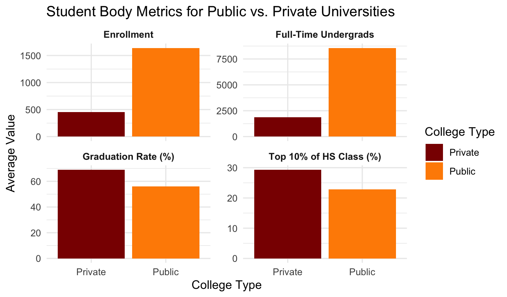
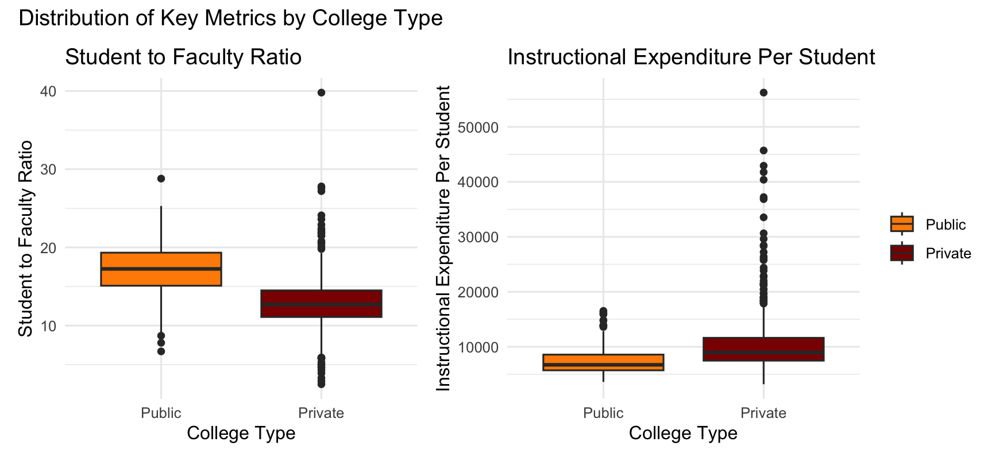
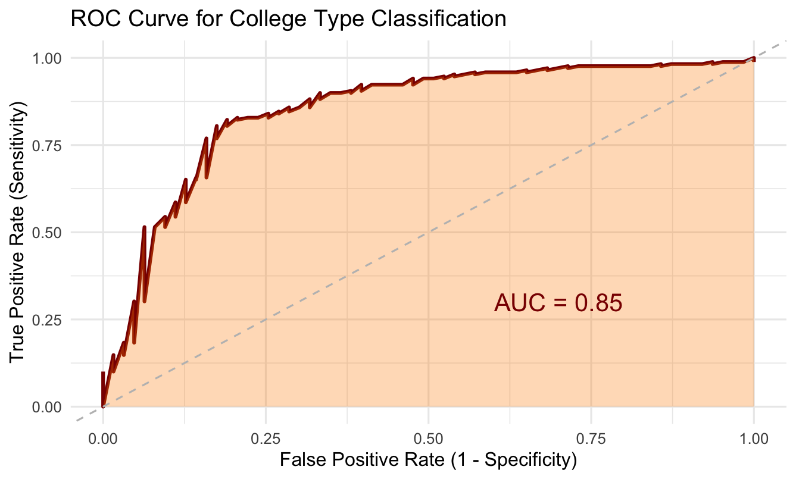

R Project
A logistic regression model predicting whether a U.S. college is public or private using student-to-faculty ratio and per-student instructional expenditure, based on a dataset of 777 colleges from a 1995 U.S. News and World Report issue.
Overview
Can institutional metrics accurately predict whether a college is public or private, and which of these variables most effectively distinguish between the two college types? The analysis used student-to-faculty ratio and instructional expenditure per student as predictors, evaluated through a GLM with binomial family.
The dataset contains 565 private colleges (~73%) and 212 public colleges (~27%), creating a class imbalance that influenced model evaluation strategy — favoring AUC, sensitivity, and specificity over accuracy alone.
Results
Student-to-faculty ratio emerged as the sole significant predictor. The model achieved strong overall performance but showed a systematic bias toward predicting private colleges due to class imbalance.
Public colleges averaged significantly more enrolled students and full-time undergraduates. Private colleges averaged higher graduation rates and a greater percentage of students from the top 10% of their high school class. Private colleges also spent more on instruction per student, while public colleges had higher student-to-faculty ratios — a pattern that proved critical for the model.
The logistic regression model showed that student-to-faculty ratio was a highly significant predictor (p = 1.03e-14), with higher ratios associated with public colleges. Instructional expenditure per student was not statistically significant (p ≈ 0.44). Odds ratio analysis confirmed that for each one-unit increase in student-to-faculty ratio, the odds of a college being private decrease by approximately 27% (OR ≈ 0.73). VIF values (~1.39 for both) indicated no multicollinearity concern.
The model performed consistently across training and test sets, suggesting good generalization without overfitting. However, specificity remained low in both sets, with over half of public colleges misclassified as private. This reflects the dataset's 73/27 class imbalance, causing the model to default to the majority private class. The AUC of 0.85 indicates strong overall discriminative ability despite this limitation.
The college dataset may not be a reliable source for drawing broad conclusions about public versus private institutions. Journalist Malcolm Gladwell conducted investigative research finding that U.S. News and World Report's college rankings are influenced by selection bias, favoring certain institutions over others based on opinion-based reputation scores. Since this dataset originates from a 1995 U.S. News and World Report issue, it likely reflects those same biases, which may partially explain the dataset's skew toward private colleges. The combination of class imbalance, limited predictor independence, and potential selection bias in the original data source limits the model's reliability for drawing broad conclusions about differences between public and private colleges.
Training Set (n = 545)
Test Set (n = 232)
Visualizations
Three charts from the EDA and model evaluation illustrating college type differences and model performance.
Student Body Metrics by College Type

Faceted bar charts comparing enrollment, graduation rate, top 10% HS class percentage, and full-time undergraduates between public and private colleges.
Key Predictor Distributions

Box plots of student-to-faculty ratio and instructional expenditure by college type. Student-to-faculty ratio shows clear separation between the two groups, while expenditure shows considerable overlap.
ROC Curve

ROC curve for the test set with AUC = 0.85, indicating strong discriminative ability. The model consistently achieves high sensitivity across classification thresholds.
Selected Code
Key code blocks from the EDA and logistic regression model, including multi-metric visualizations, the GLM, odds ratios, confusion matrix, and ROC curve.
Creates a faceted bar chart comparing four student body metrics between public and private colleges using pivot_longer for tidy reshaping.
college_comparison <- college %>%
mutate(private = ifelse(private == "Yes", "Private", "Public")) %>%
group_by(private) %>%
summarise(
`Enrollment` = mean(enroll),
`Graduation Rate (%)` = mean(grad_rate),
`Top 10% of HS Class (%)` = mean(top10perc),
`Full-Time Undergrads` = mean(f_undergrad)
) %>%
pivot_longer(cols = -private, names_to = "metric", values_to = "value")
ggplot(college_comparison, aes(x = private, y = value, fill = private)) +
geom_bar(stat = "identity") +
facet_wrap(~metric, scales = "free_y", ncol = 2) +
labs(title = "Student Body Metrics for Public vs. Private Universities",
x = "College Type", y = "Average Value", fill = "College Type") +
scale_fill_manual(values = c("Public" = "darkorange", "Private" = "darkred")) +
theme_minimal()Fits a logistic regression model using student-to-faculty ratio and instructional expenditure as predictors, then checks for multicollinearity and calculates odds ratios.
# Fit logistic regression model on training set
model1 <- glm(private ~ expend + s_f_ratio,
data = caret_train,
family = binomial())
summary(model1)
# s_f_ratio: p = 1.03e-14 (significant)
# expend: p ≈ 0.44 (not significant)
# Check for multicollinearity
vif(model1)
# Both VIF ≈ 1.39 — no multicollinearity concern
# Odds ratios
exp(coef(model1))
# s_f_ratio OR ≈ 0.73: each 1-unit increase reduces odds of "Private" by ~27%
# expend OR ≈ 1.00: no meaningful effectGenerates predictions using a 0.5 threshold, ensures factor levels match, and evaluates with a confusion matrix on both training and test sets.
# Training set predictions
probabilities.train <- predict(model1, newdata = caret_train, type = "response")
predicted.classes.min <- as.factor(ifelse(probabilities.train >= 0.5, "Yes", "No"))
# Ensure factor levels match
predicted.classes.min <- factor(predicted.classes.min, levels = c("No", "Yes"))
caret_train$private <- factor(caret_train$private, levels = c("No", "Yes"))
# Confusion matrix
confmatrix <- confusionMatrix(predicted.classes.min, caret_train$private, positive = "Yes")
print(confmatrix)
# Accuracy: 79.82% | Precision: 81.92% | Recall: 92.68% | Specificity: 45.64%Computes the ROC curve and AUC for the test set using pROC, then plots with a shaded area and AUC annotation using ggplot2.
# Compute ROC object and AUC
roc_obj <- roc(caret_test$private, probabilities.test)
auc_value <- auc(roc_obj)
# Extract ROC data for plotting
roc_data <- data.frame(
fpr = 1 - roc_obj$specificities,
tpr = roc_obj$sensitivities
)
# Plot ROC curve with shaded AUC
ggplot() +
geom_line(data = roc_data, aes(x = fpr, y = tpr), color = "darkred", size = 1) +
geom_ribbon(data = roc_data, aes(x = fpr, ymin = 0, ymax = tpr),
fill = "darkorange", alpha = 0.3) +
geom_abline(slope = 1, intercept = 0, linetype = "dashed", color = "gray") +
annotate("text", x = 0.7, y = 0.3,
label = paste("AUC =", round(auc_value, 3)),
size = 5, color = "darkred") +
xlab("False Positive Rate (1 - Specificity)") +
ylab("True Positive Rate (Sensitivity)") +
ggtitle("ROC Curve for College Type Classification") +
theme_minimal()
# AUC = 0.85